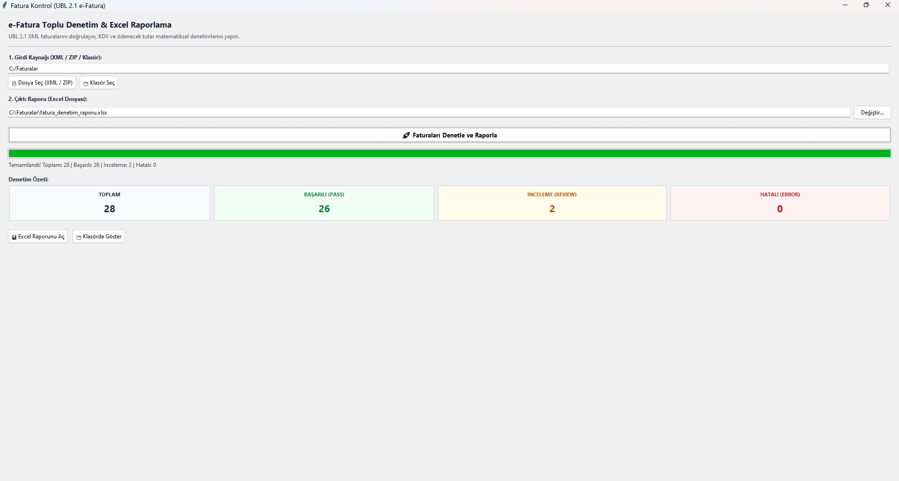

e-Faturalarınızı topluca denetleyin ve Excel'e aktarın.
UBL 2.1 XML faturalarınızı tek tek veya topluca (klasör / ZIP) tarayın. KDV, toplam ve ödenecek tutar hesaplarındaki uyumsuzlukları tespit edip sonuçları detaylı Excel çalışma kitabına aktarın.

Manuel e-Fatura Kontrolü Tarihe Karışıyor
Ay sonunda yüzlerce e-fatura XML dosyasını tek tek açıp matrah, KDV toplamı ve ödenecek tutar dengelerini elle kontrol etmek hem saatler alır hem de gözden kaçan kuruşluk hatalar KDV beyannamesinde uyumsuzluklara yol açar.
Toplu XML ve ZIP Desteği
GİB portalından veya entegratörden indirdiğiniz ZIP arşivlerini çıkartmanıza gerek yok. Fatura Kontrol arşiv içindeki tüm faturaları otomatik ayrıştırır.
Kuruş Kuruş KDV Doğrulaması
Kalem bazında hesaplanan KDV ile beyan edilen genel KDV toplamı arasındaki farkları ±0.02 ₺ yasal toleransla kontrol eder. Hatalı faturaları anında işaretler.
3 Sayfalı Excel Raporu
Sonuçlar sadece ekranda kalmaz. Özet, Kalemler ve Denetim Detayları sayfaları içeren, filtreleri hazır, kurumsal bir Excel tablosuna otomatik aktarılır.
Yerel ve Çevrimdışı Çalışma
Ticari faturalarınız harici bir bulut sunucusuna gönderilmez. Tüm ayrıştırma ve denetim işlemleri yerel bilgisayarınızda çevrimdışı olarak gerçekleştirilir.
3 Adımda Toplu Fatura Denetimi
Karmaşık kurulumlar, veritabanı ayarları veya lisans anahtarları gerekmez. İndirin ve doğrudan çalıştırın.
Kaynak Seçin
Fatura Kontrol'ü açın. Tek bir XML dosyası, yüzlerce XML içeren bir klasör ya da portaldan indirdiğiniz fatura ZIP arşivini seçin.
Denetimi Başlatın
"Faturaları Denetle ve Raporla" butonuna tıklayın. Gelişmiş ayrıştırma motoru tüm faturaları baştan sona inceler.
Excel'de İnceleyin
Oluşturulan Excel raporunu tek tıkla açın. PASS (Geçen) ve REVIEW (İncelenmesi Gereken) faturaları filtreleyerek hızlıca aksiyon alın.
Standart ve Filtrelenebilir Excel Raporu
Düzenli, filtrelenebilir ve muhasebe süreçlerinde kullanılabilecek bir Excel çalışma kitabı oluşturur.
Fatura Genel Özeti
Durum (PASS/REVIEW), fatura numarası, düzenleme tarihi, tedarikçi adı, para birimi, ödenecek tutar, satır sayısı ve kaynak dosya adı.
Kalem ve Ürün Detayları
Faturadaki tüm ürün satırları; satıcı ürün kodu, miktar, birim fiyat, satır toplamı, KDV oranı ve satır KDV tutarı.
Matematiksel Denetim Günlüğü
Fatura bazında çalıştırılan her kontrolün hesaplanan değeri, faturadaki beyan değeri, fark tutarı ve teknik açıklama.
Excel Raporunun Öne Çıkan Özellikleri
- Dondurulmuş Başlık Satırları: Aşağı kaydırdığınızda sütun başlıkları daima görünür kalır.
- Otomatik Filtreler: Sadece "REVIEW" veya "PASS" olan faturaları tek tıkla filtreleyin.
- Muhasebe Sayı Formatı: Parasal tutarlar metin olarak değil,
#,##0.00formatında sayısal olarak saklanır. - ZIP Kaynak Takibi: ZIP arşivinden okunan faturaların hangi arşivden çıktığı raporda ayrı bir sütunda tutulur.
Sıkça Sorulan Sorular
Fatura Kontrol hakkında merak edilen teknik ve kullanım detayları.
Fatura Kontrol ücretli mi? Herhangi bir gizli maliyet var mı?
Faturalarım internet üzerinden bir sunucuya yükleniyor mu?
Hangi e-fatura formatlarını destekler?
Programı çalıştırmak için Python veya başka bir yazılım kurmam gerekir mi?
FaturaKontrol.exe dosyası tek parça, taşınabilir bir Windows çalıştırılabilir dosyasıdır. Python veya ek kütüphane kurmanıza gerek yoktur.
Komut satırından (CLI) toplu iş çalıştırmak mümkün mü?
FaturaKontrol.exe faturalar/ aylik_rapor.xlsxkomutunu vererek arayüz açılmadan doğrudan denetim yapabilir ve komut çıkış kodunu (exit code) betiklerinizde kullanabilirsiniz.
Mac veya Linux işletim sistemlerinde çalışır mı?
.exe dosyası 64-bit Windows içindir. Ancak projenin Python kaynak kodları açık kaynaklı ve platform bağımsızdır. macOS ve Linux sistemlerinde Python 3.10+ ve openpyxl kütüphanesiyle doğrudan çalıştırılabilir.
Tedarikçi Faturalarınızı Hata ve Uyuşmazlıklara Karşı Bugün Denetleyin
Fatura Kontrol v0.1.0'ı ücretsiz indirin; karmaşık kurulumlarla uğraşmadan dakikalar içinde yüzlerce faturanızı denetleyin.